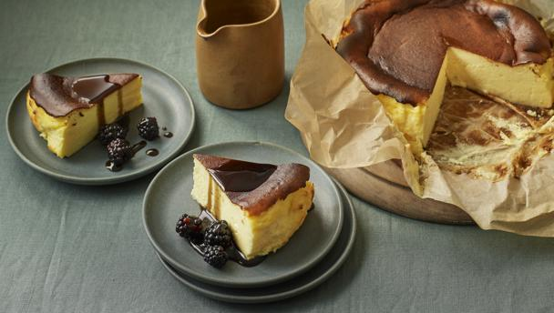

Basque Cheesecake - tastes divine; looks a mess
Description
I just can’t stop making this. A lover of all cheesecakes, in every one of their manifestations, I had – I must admit – neither eaten nor heard of this until a few years ago. It is, I should say, very easy to make. There’s no crust, it’s just a wodge of tangy cheesecake that, although burnt on top, is only barely set in the middle. The hard thing is learning to take it out of the oven when it feels undercooked.
Ingredients
For the cheesecake
600g/1lb 5oz full-fat cream cheese, at room temperature
175g/6oz caster sugar
3 large free-range eggs, at room temperature
300ml/10fl oz soured cream, at room temperature
¼ tsp fine sea salt
25g/1oz cornflour
blackberries or other berries, to serve
For the sauce
15g/½oz hard pure liquorice pellets
90g/3¼oz caster sugar
pinch fine sea salt (optional)
Steps
Preheat the oven to 200C/180C Fan/Gas 6. Get out a 20cm/8in springform tin and a roll of baking paper. Unfurl a long piece from the roll, and when it looks like you’ve got enough to line the tin with an overhang of 5–7cm/2–2¾in, tear it off and press into the tin and down into the edges at the bottom. Now do the same again with a second piece, placing it perpendicular to the first so that the tin is entirely lined. Push this piece down too and don’t worry about any pleats, creases and wrinkles; this is The Look. Sit something heavy in the tin to keep the paper in place while you get on with the cheesecake mixture.
I use a freestanding mixer fitted with the flat paddle for this, but you could easily use a large bowl, wooden spoon and elbow grease. First beat the cream cheese with the sugar until light and smooth; I beat for quite a long time, certainly not under 2 minutes and it would be at least 5 minutes by hand. It is absolutely essential – and I’m sorry to repeat myself – that the cream cheese is at room temperature before you start.
Beat in the eggs, one at a time, waiting for each one to be incorporated before adding the next. When they’re all mixed in, pour in the soured cream, beating all the while. Once that is also incorporated, you can slow down the mixer a little (or risk getting cornflour all over yourself) and then beat in the salt, followed by the cornflour, a teaspoon at a time. Remove the bowl from the mixer, scrape down the sides with a silicon spatula and give everything a good stir.
Pour into the lined tin (removing whatever’s been sitting in it, obviously), making sure no cheesecake mixture is left in the bowl. Rap the filled tin on the work surface about five times to get rid of any air bubbles.
Place in the oven and bake for 50 minutes, until the cheesecake is burnished bronze on top, even chestnut brown in places, and risen, like a dense soufflé. It will, however, still be very jiggly. It’s meant to be. You’ll think it’s undercooked, but it will carry on cooking as it cools, and it should have a soft set anyway.
Transfer the tin to a wire rack and leave to cool. It will sink in the middle a little, but that too is part of its traditional appearance. I reckon it’s cool enough to eat after 3 hours, although you may need to leave it for a little longer. If you want to chill it in the fridge, do, but not for more than 30 minutes.
Make the liquorice sauce once the cheesecake is out of the oven. If you have a bullet blender, you can pulverise the liquorice pellets first. Place the liquorice in a small saucepan with 300ml/10fl oz water. Stir in the sugar, then place over a low heat until the liquorice has all but dissolved, stirring to give it a bit of a nudge every now and again to help it melt. Turn up the heat and let it bubble away until reduced to 150ml/5fl oz – turning the heat down a bit if it looks like it’s boiling over. I find this can take up to 20 minutes. Stir in a pinch of salt, if using, and leave to cool. It will have the texture of a syrup, which in effect, it is. Transfer to a serving jug.
Before serving, unclip and lift the sides of the tin up and away, and then lift the cheesecake up with the edges of the paper. Place this on a board and peel the paper back. Take it like that, rustically beautiful, to the table, along with the blackberries and the even blacker liquorice syrup. Just drizzle a little over the slices of cheesecake as you hand them out, allowing hard-core liquorice lovers to spoon more over as they eat.